Verbeteringen Klantportaal, Quinn Mail en boekhoudkundige optimalisaties
Op dinsdag 24 november is eBlinqx Connect weer verbeterd en uitgebreid met nieuwe features. Deze release bevat onder andere opslagoverzicht uitgebreid, verbeteringen voor Klantportaal, Quinn Mail en diverse optimalisaties voor de boekhouding
Opslagoverzicht uitgebreid
Het opslagoverzicht is uitgebreid met inzichten van opslaggebruik per dossier (25 grootste dossiers) en opslaggebruik per e-mailbox (25 grootste mailboxen). Zo kan je zien welk e-mailboxen en dossiers de meeste opslag gebruiken. Per dossier is te zien wat er aan opslag wordt gebruikt voor bestanden en e-mail. De e-mails en bestanden in de prullenbak worden hierin meegeteld aangezien deze nog niet definitief zijn verwijderd wanneer ze in de prullenbak staan.
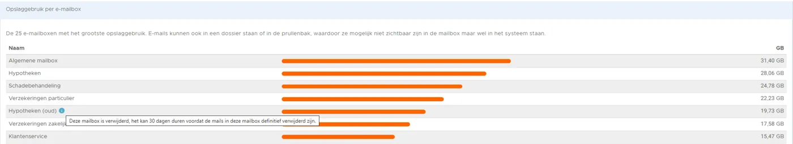
Verbeteringen Klantportaal
Naam klant bij klantprofiel in Klantportaal
Vanaf nu wordt vanuit eBlinqx Connect de naam van de aanvrager meegestuurd met het klantprofiel, zodat in Klantportaal duidelijk is wie het klantprofiel moet invullen. Staat in het product vanuit waar het klantprofiel via de workflow wordt opgestart één aanvrager geselecteerd dan komt automatisch de naam van deze aanvrager erbij te staan. Betreft het een product met twee aanvragers dan moet het ingericht staan in de workflow om de naam per aanvrager bij het klantprofiel in Klantportaal te tonen. Ook moet je dan een keuze maken voor welke persoon je het klantprofiel wilt klaarzetten. Maak je deze keuze niet dan komt er alsnog geen naam bij te staan. Wil je de workflow hierop inrichten stuur dan een e-mail naar support-eblinqx@blinqx.tech
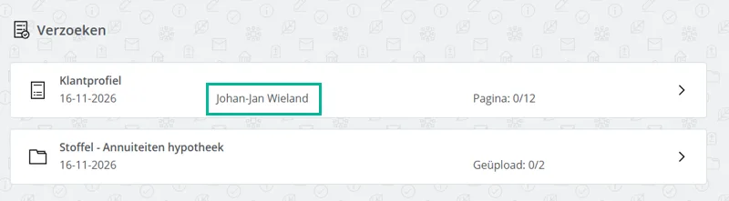
Omschrijving documentverzoek verduidelijkt
In Klantportaal staat boven de documentverzoeken voor welk product er documenten worden opgevraagd. Dit is nu verduidelijkt. Hier komt de maatschappij en de naam van het product (veld omschrijving in de productkaart) te staan. Voorheen was dit de maatschappij en het producttype, bijvoorbeeld dienst. Staat de omschrijving niet gevuld in de productkaart dan blijft het maatschappij en producttype.
WWFT checks overschrijven inzichtelijk gemaakt
Via eBlinqx Connect kan je WWFT checks uitvoeren vanuit een waar een resultaat komt. Dit resultaat kan je handmatig overschrijven. Vanaf nu moet je een toelichting geven waarom je deze handmatig overschrijft. In het klantonderzoekoverzicht wordt door middel van een informatie-icoon zichtbaar dat het resultaat handmatig is overschreven. Met je muis kan je op dit i-icoon gaan staan waarmee de toelichting zichtbaar wordt. Ook kan je zien wie het resultaat handmatig heeft overschreven en wanneer.
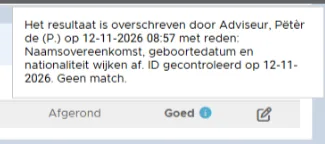
Verbeteringen Quinn mail
Criteria matching e-mails leveranciers/maatschappijen aangepast
Voorheen kon het gebeuren dat een maatschappij een e-mail stuurde over een specifieke klant, maar dat de e-mail werd gekoppeld aan het leveranciersdossier van de maatschappij vanwege het unieke e-mailadres. Deze e-mail werd dan niet naar AI gestuurd om te koppelen. Vanaf nu wordt een e-mail doorgestuurd naar AI als deze gekoppeld is aan een leveranciersdossier. AI bekijkt of deze e-mail terecht aan het leveranciersdossier is gekoppeld, bijvoorbeeld bij een nieuwsbrief of een e-mail over meerdere klanten, of dat deze e-mail gaat over een specifieke klant. Gaat de e-mail over een specifieke klant dan zal AI deze e-mail alsnog aan dit klantdossier koppelen en niet meer aan het leveranciersdossier. Of de e-mail over een specifieke klant gaat, wordt bepaald aan de hand van duidelijke kenmerken, namelijk een polisnummer, een schadenummer, een leningnummer, een KvK-nummer (bij een bedrijf), of een naam in combinatie met een adres of geboortedatum.
E-mail op laten stellen door AI ook bij nieuwe e-mail
Het is nu mogelijk om door AI een geheel nieuwe e-mail op te laten stellen. In het scherm waarin je de e-mail stelt staan nu de knoppen ‘AI mail genereren’ en ‘Tekst verbeteren met AI’. Wanneer je klikt op ‘AI mail genereren’ moet je een instructie geven om de e-mail op te laten stellen. Deze instructie is verplicht, omdat dit de enige input is. AI past niet de ontvangers (aan, cc, bcc) aan en ok een ingevuld onderwerp niet aan. Is het onderwerp leeg, dan vult de AI het onderwerp in op basis van de gegenereerde tekst. Zodra je op één van de AI-knoppen klikt, wordt de e-mail automatisch als concept opgeslagen.
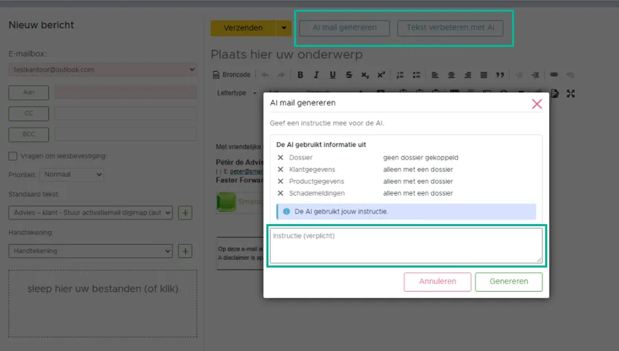
Inzicht in welke informatie AI gebruikt
Als je nu klikt op één van de knoppen "AI reply genereren", "AI mail genereren" en "Tekst verbeteren met AI" dan krijg je te zien vanuit waar AI informatie gebruikt. Dit kan bijvoorbeeld het dossier, de instructie of de geselecteerde tekst zijn. Alle mogelijke onderdelen worden getoond met daarbij een vinkje of een kruisje en extra toelichting erbij.
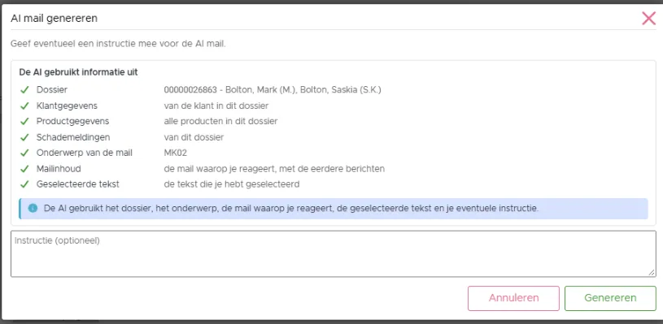
Organisaties als overige partij in te stellen
Het is nu mogelijk om organisaties als overige partij in te stellen. In de module Overige partijen kan je rollen aanmaken voor organisaties. Er komt per rol een button bij waarmee je kunt aangeven of deze rol een persoon of organisatie betreft. Ook hier kan je aangeven of de rol een premiebetaler is, in het product te selecteren moet zijn en/of op startpagina getoond moet worden. Vervolgens kan je in het klantdossier een organisatie met deze rol toevoegen.
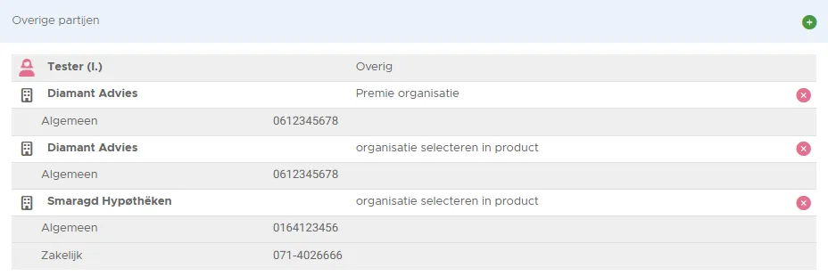
Klanten automatisch indelen in relatiesoorten
Met relatiesoorten deel je je klanten in op basis van hun waarde voor je kantoor. Je bepaalt zelf welke relatiesoorten je gebruikt, bijvoorbeeld "Goud", "Zilver", "Brons" of "Kans". Ook bepaal je zelf aan welke regels een klant moet voldoen. eBlinqx Connect deelt elk klantdossier daarna automatisch in. Zo zie je snel welke klanten het meest opleveren en bij welke klanten nog kansen liggen.
De relatiesoorten gelden voor je hele omgeving, dus voor alle kantoren en niet per kantoor in te stellen.
Relatiesoorten instellen
Als beheerder in een eBlinqx Connect-omgeving vind je onder Beheer – Klantsegment overzicht het nieuwe menu-item Relatiesoorten. De lijst is eerst leeg: je voegt de relatiesoorten zelf toe.
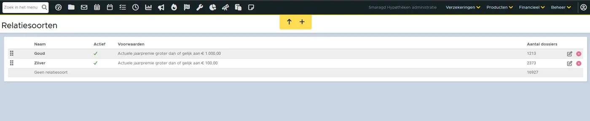
Toevoegen: klik op Relatiesoort toevoegen en geef de relatiesoort een naam van maximaal 25 tekens. Een nieuwe relatiesoort staat eerst op niet actief. Pas als je hem op actief zet, gaat eBlinqx Connect hem gebruiken.
Regels vastleggen: per relatiesoort stel je één of twee voorwaarden in, op basis van de verwachte jaaromzet en/of de actuele jaarpremie. Dit zijn dezelfde bedragen die je per dossier ziet onder Financieel - Overzicht. Je kiest of het bedrag kleiner, groter of gelijk moet zijn aan een bepaald bedrag, of tussen twee bedragen moet liggen. Gebruik je twee voorwaarden, dan kies je of beide moeten gelden (EN) of minimaal één (OF). Een actieve relatiesoort heeft altijd minimaal één voorwaarde.
Volgorde bepalen: je zet de relatiesoorten in de gewenste volgorde door ze te verslepen. Voldoet een klant aan de regels van meerdere relatiesoorten, dan krijgt hij de relatiesoort die het hoogst in de lijst staat. Zet bijvoorbeeld "Goud" boven "Zilver".
Aantal dossiers: per relatiesoort zie je hoeveel klantdossiers er op dit moment in vallen. Ook zie je hoeveel dossiers geen relatiesoort hebben. Zo zie je direct wat een wijziging in de regels oplevert.
Verwijderen: een relatiesoort waarin nog dossiers vallen, kun je niet verwijderen. Zet de relatiesoort dan op niet actief.
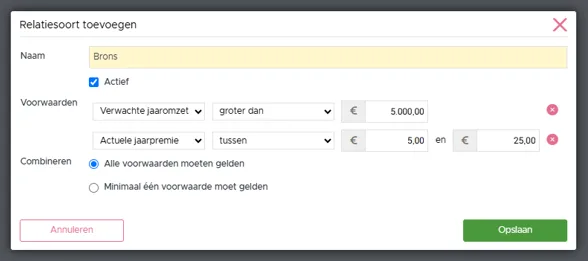
Enkele voorbeelden:
Verwachte jaaromzet groter dan of gelijk aan € 10.000 → Goud
Verwachte jaaromzet tussen € 5.000 en € 10.000 EN actuele jaarpremie groter dan € 2.500 → Zilver
Actuele jaarpremie kleiner dan € 30 → Kans (lage premie, dus ruimte voor meer)
Hoe deelt eBlinqx Connect je klanten in?
Er wordt gekeken naar de "Verwachte jaaromzet" en ‘Actuele jaarpremie’. De verwachte jaaromzet is het totaal van de kolom "Verwacht" in het paneel "Opbrengsten" (verwachte provisie uit de lopende producten plus verwachte opbrengst uit abonnementen). De "Actuele jaarpremie" is het totaal van het paneel "Actuele jaarpremies". Dit in het klantdossier bij Financieel - Overzicht
eBlinqx Connect deelt alleen lopende klantdossiers in (met een dossiersysteemstatus Lopend). Wordt een dossier inactief, dan vervalt de relatiesoort.
eBlinqx Connect loopt de actieve relatiesoorten van boven naar beneden langs. De klant krijgt de eerste relatiesoort waaraan hij voldoet. Voldoet hij aan geen enkele, dan krijgt hij geen relatiesoort.
Je kunt de relatiesoort van een dossier niet met de hand aanpassen. De relatiesoort volgt altijd uit de regels die je hebt ingesteld.
Wijzig je een product of de status van één dossier, dan wordt de relatiesoort direct bijgewerkt. Wijzigingen die ervoor zorgen dat meerdere dossiers van relatiesoort wijzigen worden in een wachtrij geplaatst en deze worden in de nacht verwerkt.
Elk weekend worden alle klantdossiers opnieuw ingedeeld. Zo blijft de relatiesoort kloppen, ook als bedragen veranderen doordat bijvoorbeeld een product ingaat. Direct na de release worden alle dossiers ook één keer ingedeeld.
eBlinqx Connect houdt bij wanneer de relatiesoort van een dossier verandert. Zo zie je bijvoorbeeld wanneer een klant van "Zilver" naar "Goud" is gegaan. Dit wordt bijgehouden in een historietabel.
Waar zie je de relatiesoort?
In het dossier: op de startpagina staat op het tabblad CRM het nieuwe paneel Relatiesoort. Dit paneel zie je alleen als je ook Financieel - Overzicht mag bekijken, omdat de relatiesoort iets zegt over de omzet van de klant. Hier zie je de relatiesoort staan of ‘Geen relatiesoort’.
In de rapportage: de managementrapportage Omzet per klant heeft een nieuwe kolom Relatiesoort. Je kunt hier ook op filteren.
In brieven, e-mails en workflows: met de nieuwe tag relatiesoort neem je de relatiesoort op. Je kunt de tag ook in een voorwaarde gebruiken. Zo neem je bijvoorbeeld alleen bij klanten met relatiesoort "Goud" een extra alinea op in een brief.
In de API: klantdossiers bevatten het nieuwe veld relatiesoort. Heeft het dossier geen relatiesoort, dan is het veld leeg (null).
Rapportage Segmentatie verdwijnt
De oude rapportage Segmentatie, die dossiers indeelde op het aantal producten, is verwijderd. De relatiesoorten nemen de plaats hiervan in.
Bankafschriften matchen op basis van factuurnummer
Bij het inlezen van bankafschriften koppelt eBlinqx Connect betalingen nu ook aan openstaande facturen op basis van het factuurnummer in de omschrijving. Zo worden meer betalingen automatisch en correct verwerkt en heb je minder handwerk.
De matching gaat als volgt:
Volgorde van matchen: Eerst wordt er gekeken naar het betalingskenmerk, vervolgens naar het factuurnummer in de omschrijving en als hier geen match op gevonden kan worden naar de matchingscriteria en een exacte match op bedrag wanneer er precies 1 openstaande factuur is
Afwijkend bedrag: De betaling wordt ook gekoppeld als het bedrag niet gelijk is aan het factuurbedrag, bijvoorbeeld bij een deelbetaling of een afronding. Het bedrag wordt afgeboekt op het openstaande saldo van de factuur.
Andere betaler: De betaling wordt gekoppeld aan de klant bij wie de factuur hoort, ook als die vanaf een ander rekeningnummer betaalt.
Meerdere facturen in één betaling: Staan er meerdere factuurnummers in de omschrijving, dan worden alle bijbehorende openstaande facturen gekoppeld. Dit gebeurt alleen als het totaal openstaand van die facturen gelijk is aan het ontvangen bedrag. Facturen van verschillende relaties worden niet ondersteund.
Geen onterechte koppelingen: Een getal in de omschrijving telt alleen mee als het precies overeenkomt met een factuur die nog openstaat. De nummerreeks moet exact overeenkomen met nummerreeks die ingesteld staat in de module Factuurnummers overzicht. Al betaalde facturen en toevallige cijferreeksen worden genegeerd.
Dit werkt alleen voor bankafschriften in CAMT.053-formaat
Per administratie in te stellen: Het matchen aan de hand van het factuurnummer zet je per administratie aan of uit. Dit via Administratie onderhoud – Afschriften verwerken. Staat de instelling uit dan verandert er niets en vind de matching plaats aan de hand van de bestaande functionaliteit
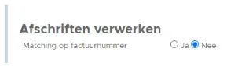
Incassobatch genereren geoptimaliseerd
Het proces om incassobatches te generaliseren is geoptimaliseerd. Er diverse wijzigingen doorgevoerd, namelijk:
In de module Incasso- en excassobestanden maken is het nu mogelijk om meer dan 1000 transacties te selecteren. Wordt er bij het maken van het incassobestand meer dan 1000 regels geselecteerd dan wordt het tussenscherm waarin je wijzigingen kunt doen niet meer getoond. Eventuele foutmeldingen worden eerder getoond in het scherm bij het selecteren van de posten.
In Financieel – Onderhoud dagboeken kan je per bankrekening zelf het limiet voor het aantal transacties in een SEPA-bestand instellen. Standaard staat deze op 5000 transacties. Het maximaal aantal is 100.000. Het ingevoerde aantal bepaalt wat er gebeurt bij het downloaden van de incassobatch. De posten die je selecteert in de module incasso-en excassobestanden maken vormen één batch. Het aantal geselecteerde posten én het ingestelde limiet bepalen of deze batch één of meerdere SEPA-bestanden gaat zijn. Is de limiet ingesteld op 5000 transacties en de batch bevat 6000 transacties dan krijg je één SEPA-bestand met 5000 transacties en één SEPA-bestand met 1000 transacties. Bij het downloaden van de batch krijg je dan een zip-bestand met daarin deze 2 bestanden. Bevat de batch 4000 transacties dan krijg je direct één SEPA-bestand en geen zip-bestand.
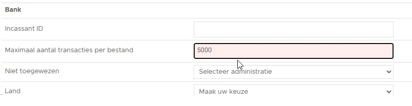
Het proces voor het goedkeuren en verwijderen van een incassobatch is naar de achtergrond verplaatst. Dit ten behoeve van de performance. Zolang dit proces draait staat er een zandloper achter de batch en is het niet mogelijk om deze te downloaden. Bij grote batches kan het even duren, voordat het proces helemaal heeft gedraaid.
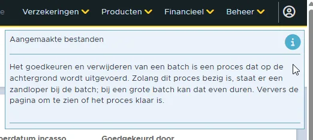
Correctiefase in periodes onderhoud
In Financieel – Periodes onderhoud is er een nieuwe status bijgekomen, namelijk de correctiefase. Je kunt zowel een open als gesloten periode omzetten naar de correctiefase.
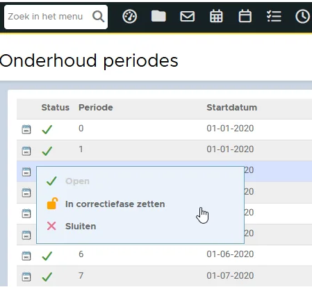
Heeft een periode deze status dan is het mogelijk, indien je de juiste rechten hebt, om via het memoriaal dagboek correcties door te voeren in de periode. In deze status is het niet mogelijk om via andere dagboeken boekingen te doen. De periodes in de correctiefase herken je aan een klokje voor de periode.
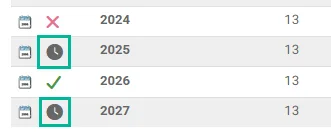
Wil je periodes in de correctiefase kunnen zetten? De mutatiebevoegde kan een e-mail sturen naar support-eblinqx@blinqx.nl met daarin het verzoek en de personen voor wie het recht aangezet mag worden.
Signaal inkoopfactuur betaald
De workflow die draait onder een inkoopfactuur kan nu een signaal krijgen dat de inkoopfactuur is betaald, zodat de workflow automatisch verder kan gaan aan de hand van dit seintje. Betaald houdt in dat de factuur in de boekhouding is afgeboekt tot 0 euro. Deelbetalingen (openstaande bedrag is dan niet 0 euro) en afboeken van een inkoopfactuur tegen een inkoop-creditfactuur geven geen signaal.
Wil je dit ingericht hebben in de workflow inkoopfacturen? Stuur dan een e-mail naar support-eblinqx@blinqx.tech
Deelbetalingen aan RC maatschappijen en deelnemers en omschrijving aanpassen
Het is nu mogelijk om deelbetalingen te doen aan RC maatschappijen en deelnemers. Na het selecteren van alle posten kan je de bedragen en betalingsreferentie aanpassen. Hiervan wordt een SEPA-bestand gemaakt. Let op: indien je de bedragen aanpast dan worden de posten niet afgeletterd. Dit zal als losse journaalpost worden geboekt die vervolgens handmatig afgeletterd moet worden.
Daarnaast is het mogelijk om het veld omschrijving aan te passen, zodat je bijvoorbeeld het aanstellingsnummer hierin kan vermelden.
Bankafschriften verwerken in één boekstuk per periode
Lees je bij de module Afschriften importen een CAMT053-bestand in, dan maakte eBlinqx Connect tot nu toe altijd één boekstuk aan voor elke dag met transacties. Een afschrift van een paar weken leverde zo al snel veel boekstukken op. Vanaf nu kun je ook kiezen voor één boekstuk per boekingsperiode. Zo sluit het aantal boekstukken aan op de periodes van je administratie en controleer je je afschrift makkelijker als één geheel.
Wat is er nieuw?
Nieuwe instelling bij bankdagboeken. In Onderhoud dagboeken staat bij dagboeken van het type Bank de nieuwe instelling Boekstuk per. Je kiest uit:
Dag: één boekstuk per dag met transacties (zoals je gewend bent).
Periode: één boekstuk per boekingsperiode.
Per import aan te passen. Bij Afschriften importeren staat de keuze vooraf ingevuld volgens de instelling van het gekozen bankdagboek. Je kunt de keuze voor die ene import wijzigen. De instelling van het dagboek verandert daardoor niet. Deze keuze is alleen beschikbaar bij CAMT053-bestanden.
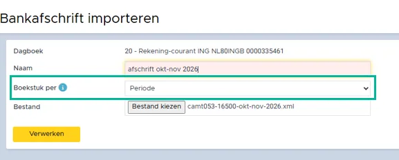
Hoe werkt "Periode"?
eBlinqx Connect maakt een boekstuk aan voor elke periode waarin transacties vallen. Staan er in je afschrift transacties uit januari, februari en maart, dan krijg je drie boekstukken.
Een periode zonder transacties levert geen boekstuk op.
Loopt het afschrift over twee boekjaren, dan worden de transacties verdeeld over de juiste periodes in elk boekjaar.
Elke import maakt altijd nieuwe boekstukken aan. Lees je januari in twee delen in, dan krijg je dus twee boekstukken voor januari. Er wordt niets toegevoegd aan een boekstuk van een eerdere import.
Het beginsaldo is het saldo bij de eerste dag met transacties in de periode, het eindsaldo dat van de laatste dag. De boekstukdatum is de laatste dag met transacties in de periode.
Valt een transactie in een gesloten periode, dan wordt het bestand niet verwerkt. Je krijgt dan dezelfde melding als nu.
Het afletteren en koppelen van transacties werkt hetzelfde als je gewend bent. Boekstukken die je al per dag hebt aangemaakt, blijven zoals ze zijn.
Let op: na de release zijn je bankdagboeken op "Periode" gezet
Wij hebben Boekstuk per voor al je bestaande bankdagboeken op Periode gezet. Ook nieuwe bankdagboeken krijgen standaard deze instelling. Wil je liever per dag blijven verwerken? Pas de instelling dan aan in Onderhoud dagboeken.
Betaallinks Mollie verlopen niet meer en re-direct beter ingesteld
Verstuur je een factuur of betalingsoverzicht met een betaallink via Mollie, dan maakte eBlinqx Connect tot nu toe direct een betaling aan bij Mollie. Die link verliep na ongeveer twee weken. Klikte jouw klant daarna op de link, dan kwam hij op een foutpagina van Mollie en wist hij niet wat hij moest doen. Ook kwam je klant na afloop altijd op dezelfde pagina terecht, ook als hij de betaling had geannuleerd.
Vanaf nu bevatten je facturen en mails een vaste betaallink van eBlinqx Connect. De betaling bij Mollie wordt pas aangemaakt op het moment dat je klant op de link klikt. Zo kan de link niet meer verlopen.
Ook zijn de instellingen wat verandert. In Beheer – Organisatie & personen – betreffende organisatie moet nu een re-direct-url ingesteld staan. De naam hiervan is nu Redirect-url betaald. Hier komt jouw klant op uit als de factuur is betaald. Voorheen was deze optie optioneel. Had je hier al een adres ingevuld, dan blijft dat gewoon staan. Is de instelling bij jou nog leeg, vul hem dan zo snel mogelijk in. Zolang hij leeg is, ziet je klant na het betalen een foutpagina. Ook is er een nieuwe setting bij gekomen, namelijk Redirect-url geannuleerd. Deze is optioneel. Als je deze instelt dan komt de klant hierop uit bij het annuleren van de betaling.
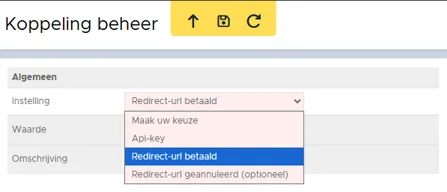
Wat merk je ervan?
Eigen pagina na annuleren. Met de nieuwe instelling Redirect-url geannuleerd (optioneel) stuur je je klant na een geannuleerde betaling naar een andere pagina. Vul je deze niet in, dan komt je klant op de pagina van Redirect-url betaald.
Je klant kiest zelf hoe hij betaalt. Je klant kiest bij Mollie uit de betaalmethodes die je daar hebt ingeschakeld.
Slim omgaan met dubbele klikken. Klikt je klant opnieuw op de link terwijl er al een betaling openstaat, dan gaat hij naar die betaling. Is de factuur al betaald of loopt de betaling nog, dan komt hij op je pagina voor een geslaagde betaling. Er wordt dus geen tweede betaling aangemaakt. Is een eerdere betaling verlopen, geannuleerd of mislukt, dan krijgt je klant een nieuwe betaling.
Duidelijke melding bij een fout. Kan de betaling niet worden aangemaakt, dan ziet je klant de melding: "De betaallink kan op dit moment niet worden geopend. Probeer het later opnieuw of neem contact op met je adviseur."
Je bestaande teksten blijven werken. De tag betaallink in je factuur- en mailteksten werkt zoals je gewend bent. Wel geeft de subtag verloop datum nu de vervaldatum van de factuur. Bij een betalingsoverzicht is dat de vroegste vervaldatum van de facturen erin. Een creditfactuur krijgt geen betaallink.
Geen doorverwijzing meer naar Digimap. Na het betalen werd je klant voorheen naar Digimap gestuurd als er geen redirect-url was ingevuld. Dat gebeurt niet meer.
Nieuw icoon in het factuuroverzicht
In het factuuroverzicht zie je aan het betaallink-icoon hoe ver je klant is:
Geen icoon: je klant heeft nog niet op de betaallink geklikt.
Lichtgrijs icoon (Op betaallink geklikt): je klant heeft op de link geklikt, maar nog niet betaald.
Donkergrijs icoon (Betaald via betaallink): je klant heeft via de betaallink betaald.
Het rode icoon Betaallink vernieuwen is verdwenen, want een betaallink kan niet meer verlopen. In de Excel-export zie je in de kolom Betaallink voortaan Geklikt, Betaald of niets.
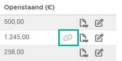
Aanpassing in het Overzicht betaallinks
In het Overzicht betaallinks (Financieel - Overzichten) verschijnt een factuur of betalingsoverzicht pas als je klant op de betaallink heeft geklikt. Je ziet ook bij facturen wanneer je klant heeft geklikt. Zo zie je in één oogopslag hoe lang geleden een klant heeft geklikt zonder te betalen.
Al verstuurde facturen
Betaallinks in facturen die je al hebt verstuurd, werken zoals voorheen. Deze links verlopen binnen een paar weken vanzelf.
Verbeteringen onder de motorkap
De softwaretechnieken van eBlinqx Connect zijn weer verder vernieuwd. We hebben hier verdere verbeteringen op doorgevoerd. Ondanks dat je hier niets van merkt, is deze vernieuwing erg belangrijk.
Hierdoor kunnen we namelijk nieuwe innovaties blijven implementeren, omdat we gebruikmaken van de nieuwste software. Bovendien blijft de veiligheid gewaarborgd. Dit geldt zowel voor eBlinqx Connect als voor alle koppelingen en exports, zoals klantportalen, adviespakketten, Excel en verbindingen met geldverstrekkers en verzekeraars.
Supportwebsite verplaatst
Wegens de PHP-perikelen is de supportwebsite verplaatst. De artikelen kan je nu raadplegen via https://intercom-help.eu/eblinqx/nl/.
In de artikelen ontbreken de afbeeldingen. Deze zullen aangevuld worden.
Overige verbeterpunten
Het downloaden van incasso- en excassobetanden is verbeterd. Het is nu mogelijk om bestanden te blijven downloaden nadat een dossier of mandaat in dat bestand op een later moment is verwijderd. Voorheen kwam er dan een uitroepteken te staan en was het niet meer mogelijk om het bestand te downloaden.
Het is nu mogelijk om tags van de schademelding te gebruiken in een TP incassofactuur. Deze zijn tags die beginnen met factuur – boeking – schademelding en zijn op te halen middels de module standaard template.
Vanaf de vorige release wordt er een adres meegestuurd in een incassobatch en vindt er hier controle op plaats. Vanaf 15-11-2026 blokkeert de batch bij een onvolledig adres in een land buiten de EER. Bij een land wat valt binnen de EER blokkeert de batch niet, maar verschijnt er een blauwe melding om je erop te attenderen dat het adres niet volledig is.
Het is nu mogelijk om een verschil weg te boeken op een grootboekrekening met gekoppelde subadministratie, bijvoorbeeld de debiteurenrekening. Als je daar nu een grootboekrekening met subadministratie selecteert dan verschijnt er een veld waar je de relatie kunt selecteren.
Bij TP incasso boekingen kan je nu gemakkelijk de journaalpost inzien. Voor de boeking staat een boekstukicoon. Als je hier met je muis op gaat staan dan wordt de journaalboeking getoond.
De functie |url is er voor tags bijgekomen. Deze functie geeft op de tags
[algemeen->persoon->afbeelding]en[algemeen->organisatie->afbeelding]alleen de URL van de afbeelding terug, zodat je zelf een<img>met formaat kan opbouwen, bijv.<img src="[algemeen->persoon->afbeelding|url]" width="100" height="100">. Zonder|urlwordt de bestaande grootte van de afbeelding gebruikt.